Git
Git 是一个免费的开源分布式版本控制系统，旨在处理从小型到 快速高效的超大型项目。
Git的安装
git官网:Git
:::tips
// 查看git版本
git -v
初次使用git需要配置用户名和邮箱
git config –global user.name “Jasper Yang’
git config –global user.email geekhall.cn@gmail.com
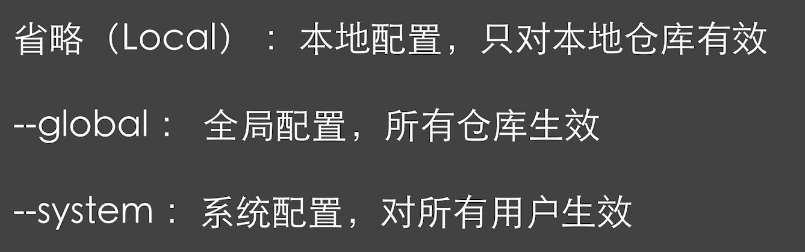
查看配置的信息
git config –global –list
:::
Git的使用
新建仓库
:::tips
方式一 : git init //本地初始化仓库
方式二 : git clone //远程克隆仓库
:::
工作区域和文件状态
工作区域
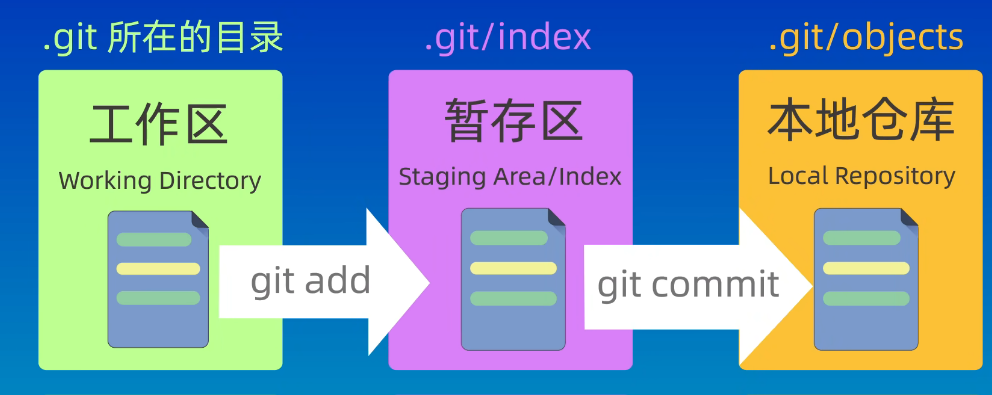
文件状态
:::tips
未跟踪:新创建的,未被git管理的文件未修改:已被git管理,文件内容未被修改的文件
已修改:已修改,未被添加到暂存区的文件
已暂存::已被添加到暂存区的文件
:::
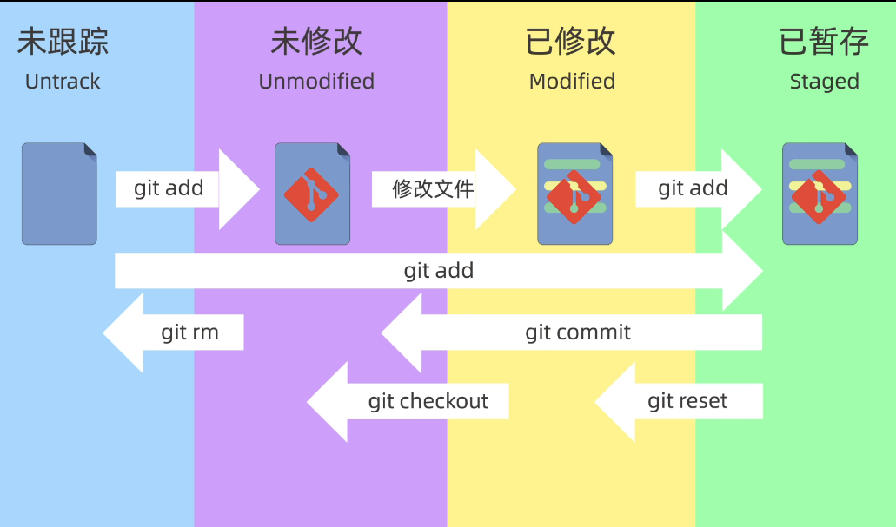
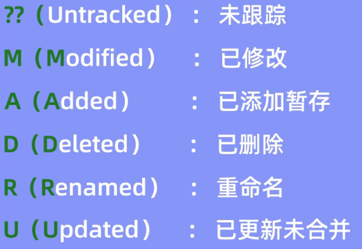
添加和提交文件
:::tips
git init 创建仓库
git status 查看仓库
git add 添加到暂存区
git commit 提交
git log 查看历史提交记录
:::
git reset 回退版本
:::info
git reset
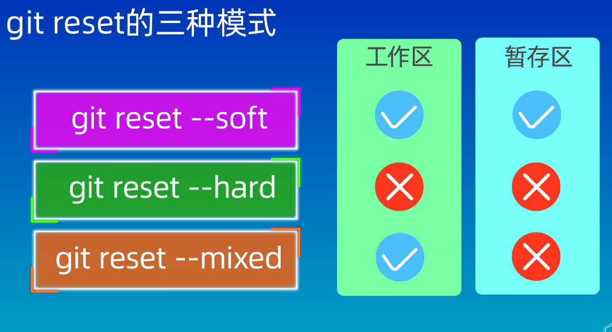
:::
:::tips
ls 查看工作区所有文件
ls -a 查看工作区所有文件(包括隐藏文件)
git ls-liles 查看暂存区所有文件
:::
:::tips
谨慎使用 –hard 会删除两个版本之间的工作区和暂存区
若误操作删除,可以使用git reflog 查看操作的历史记录,然后使用git reset 回退到误操作前的版本
:::
git diff
git diff
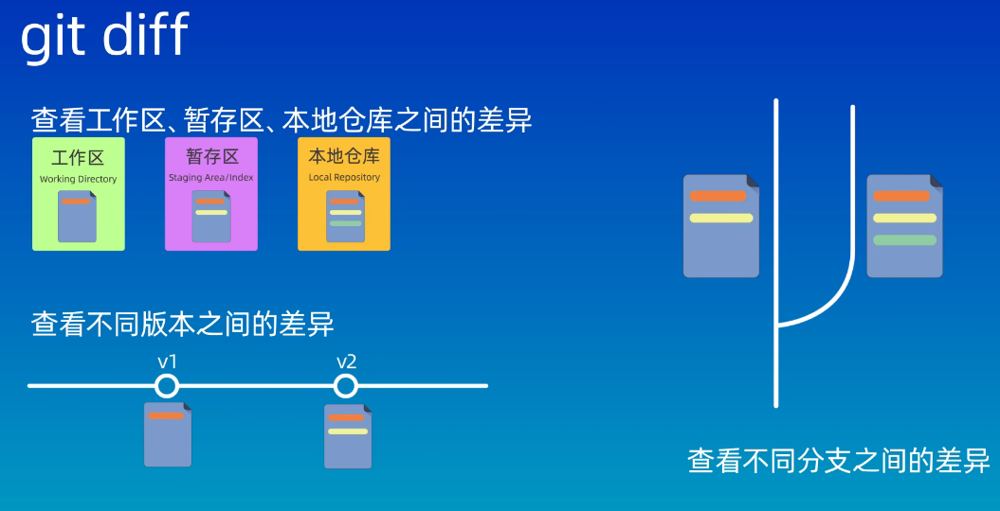
:::tips
// HEAD 指向分支的最新提交节点
git diff 默认查看工作区和暂存区的差异
git diff HEAD 查看工作区和版本库的差异
git diff –cached 查看暂存区和版本库的差异
git diff
git diff
:::
git rm
git rm
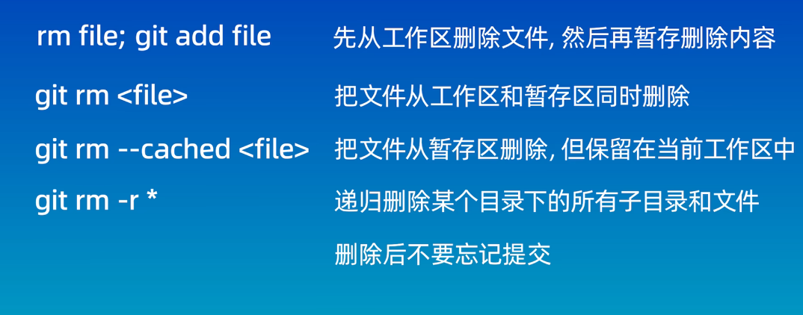
.gitignore
.gitignore
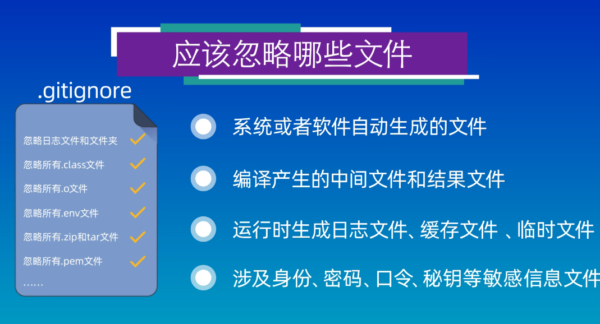
Git官网匹配规则:Git - gitignore Documentation
远程仓库
不存在本地仓库
echo"# remote-repo">> README.md
git init
git add README.md
git commit -m"first commit"
git branch - main
git remote add origin git@github.com:geekhall-laoyang/remote-repo.git
git push -u origin main
存在本地仓库
git remote add origin git@github.com:geekhall-laoyang/remote-repo.git
git branch - main
git push -u origin main
配置SSH密钥
如果第一次使用ssh方式,需要配置SSH密钥,详见git ssh key配置_git配置ssh key-CSDN博客
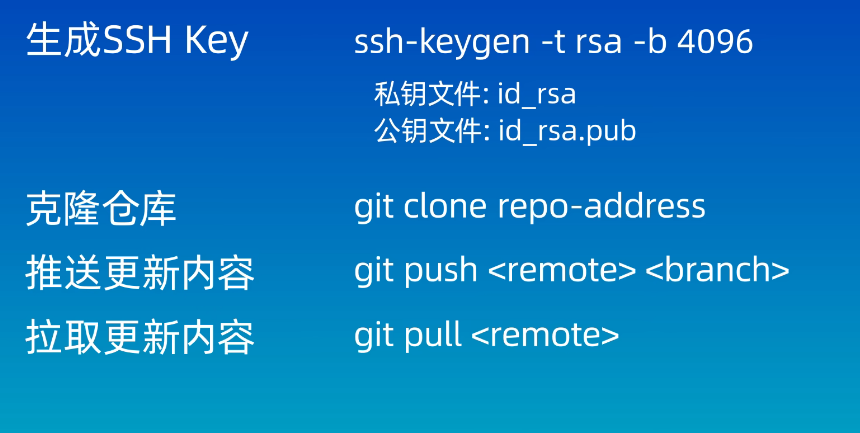
:::tips
git remote -v 查看本地仓库关联远程仓库
git push -u origin main:main 将本地分支和远程分支关联并推送(如果本地和远程分支相同,则可省略:main)
git pull<远程仓库名><远程分支名>:<本地分支名> 如果省略的话默认就是拉取仓库别名为origin的主分支
:::
分支
:::tips
git branch 查看分支
git branch
git checkout
git switch
git merge dev 合并分支 (首先切换到要接受合并的分支,例如:main)
git branch -d dev 删除已被合并的分支 ( 未被合并不能被-d删除,需要-D强制删除分支 )
git merge –abort 终止合并
:::
合并冲突
如果两个分支修改了同一处代码,合并时会产生合并冲突,需要解决冲突
:::tips
当发生冲突可以使用git status 查看冲突文件列表,也可使用git diff 查看具体冲突内容
需要手动修改冲突文件,在重新提交
:::
git rebase变基
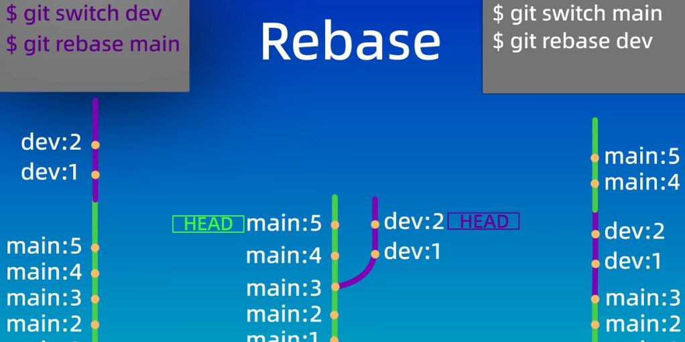
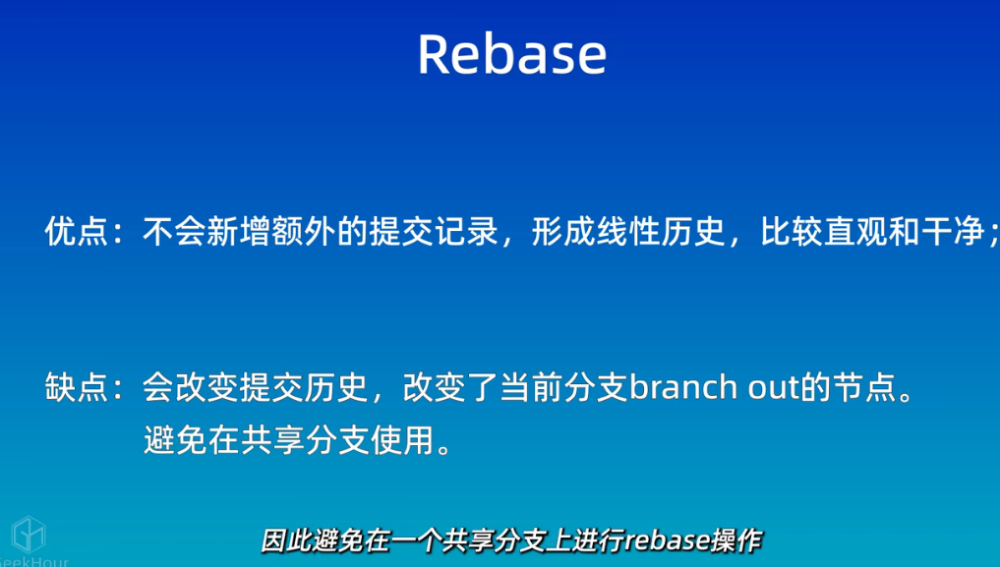
git cherry-pick
:::tips<font style="color:rgb(77, 77, 77);">git cherry-pick</font>命令的作用，就是将指定的提交（commit）应用于其他分支。
git cherry-pick
:::
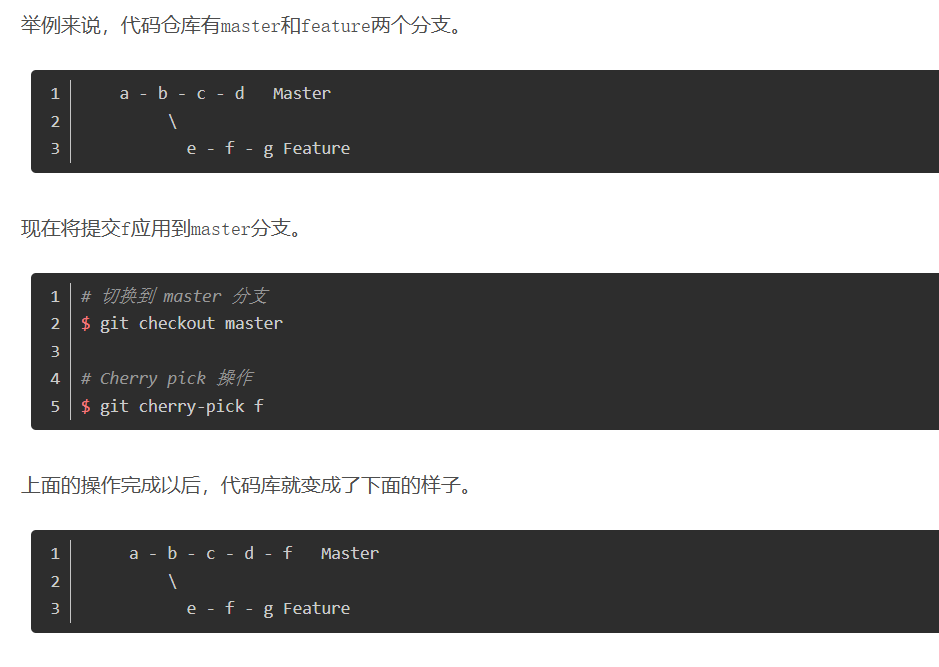
:::tips
$ git cherry-pick
// 不包含A，包含B
$ git cherry-pick A..B
// 如果想搞成[]区间，使用 git cherry-pick A^..B 相当于[A B]包含A
$ git cherry-pick A^..B
:::
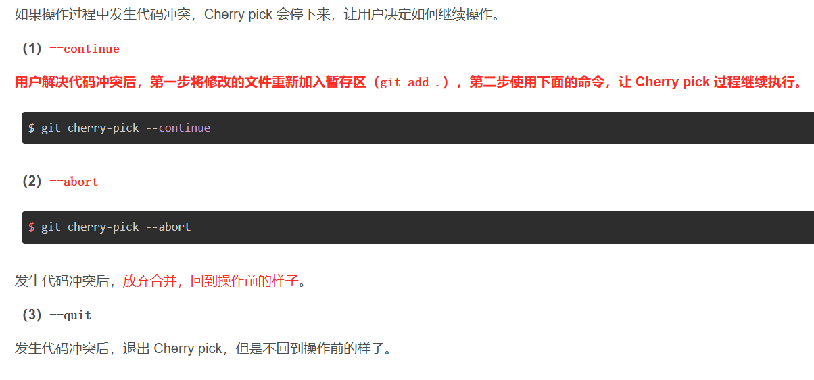